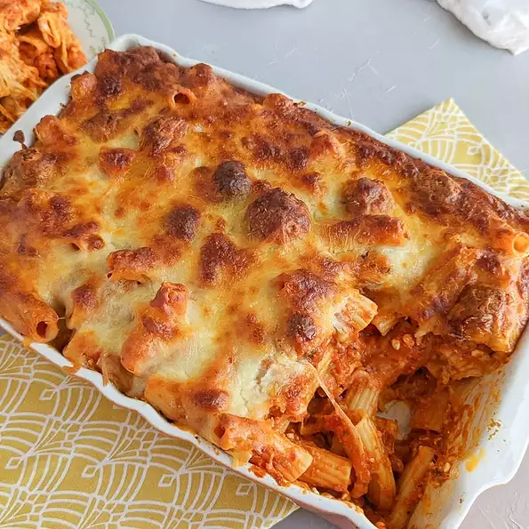

Meatball Pasta Bake

Description:
This easy-to-make baked casserole is better than lasagna!
Ingredients
- 1 (16 ounce) package ziti pasta
- 1½ pounds frozen cooked meatballs, thawed
- 2 (28 ounce) jars prepared marinara sauce
- 1 cup ricotta cheese
- 1 teaspoon Italian seasoning
- 1 teaspoon garlic powder
- 3 cups shredded mozzarella cheese, divided
- ⅔ cup grated Parmesan cheese, divided
Steps
- Bring a large pot of lightly salted water to a boil. Add ziti and cook, stirring occasionally, about 3 minutes less than the package instructions, about 8 minutes. Drain pasta.
- Preheat the oven to 350 degrees F (175 degrees C). Lightly grease a 13x9 inch baking dish.
- Heat oil in a skillet over medium heat and cook meatballs until browned on all sides, about 5 minutes. Add marinara sauce and ricotta cheese; mix to combine. Add cooked pasta and mix to combine. Season with Italian seasoning and garlic powder.
- Cover the bottom of the prepared baking dish with a layer of sauce without meatballs. Sprinkle 1 cup mozzarella cheese on top. Add another layer of sauce with meatballs on top and sprinkle with 1/3 cup Parmesan cheese. Add another layer of 1 cup mozzarella cheese. Add the rest of the sauce and meatball mixture on top, followed by remaining 1 cup mozzarella cheese and 1/3 cup Parmesan cheese. Cover baking dish with aluminum foil.
- Bake in the preheated oven until cheese is melted, 20 to 30 minutes.
- Remove foil and bake until cheese starts to turn golden brown, 10 to 20 minutes. Enjoy!